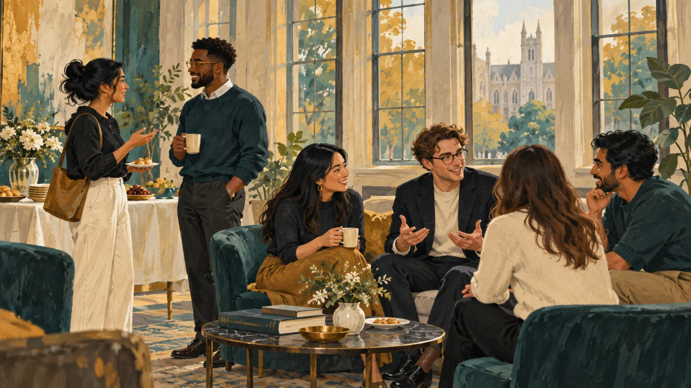

Confirmed · October 29
Welcome mixer
Meet fellow students and faculty over snacks. Exchange research interests and bring an idea for the chapter’s next event. Open to all.
Virginia Commonwealth University
A student community for health services research, health policy, and the work that comes next.
Meet across disciplines. Share your findings. Make time for writing.
Connect with the chapter

Meet fellow students and faculty over snacks. Exchange research interests and bring an idea for the chapter’s next event. Open to all.
A regular space for your work
Our writing and accountability group brings analysis, dissertations, manuscripts, and other projects into a shared 11 a.m.–2 p.m. work window.
01 · BEGINNING
Share what you worked on, what you concluded, and the next task you want to finish.
02 · FOCUSED WORK
Work independently. Use the session for analysis, reading, drafting, revising, or research communication.
03 · END
Report what changed, what remains unresolved, and what you will do before the next session.
Zoom. First date and recurring day to be announced. Asynchronous check-ins are available between sessions.
In planning
Drug pricing, value assessment, and patient access through a cross-disciplinary panel.
A faculty discussion of reproducibility and the use of AI in health policy research.
Practical peer and faculty feedback on abstracts and research communication.
Chapter leadership
Keep the conversation going
Suggest a topic, express interest in a collaboration, or tell us what would help your research move forward.
Share your interests